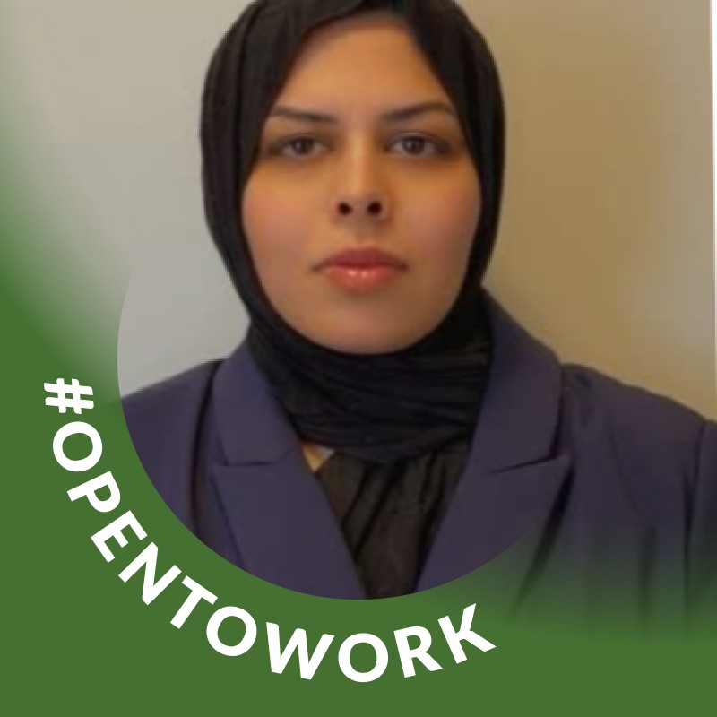

Consumer Electronics Sales Dashboard
A reporting dashboard for exploring revenue, profit, orders, product performance, trends, and geographic distribution.
Power BIPower QueryDAX
I am developing my career in business intelligence and data analytics through practical projects in reporting, data preparation, validation, and dashboard development.
Power BI | SQL | Data Analysis | Reporting | Data Visualization

To replace this image later, overwrite images/profile.png with a new file using the same name.
I am a Business Intelligence and Data Analytics professional with education in Business Intelligence Data Analysis and Reporting at SAIT. My practical work includes building dashboards, preparing and validating data, working with SQL, and presenting information through clear visual reporting.
My earlier experience with records, customer and property information, verification, and compliance supports a careful approach to data quality, documentation, and accuracy under deadlines. I am seeking an entry-level opportunity where I can continue developing my analytical skills and contribute to useful business insights.
Projects are presented as concise case studies. Verified findings can be added later without changing the site structure.
A reporting dashboard for exploring revenue, profit, orders, product performance, trends, and geographic distribution.
Prepared and validated outreach data, created a master table, exported analysis-ready data, and developed a two-page dashboard.
A property assessment reporting project with a data model, report view, and drill-through property detail view.
Prepared and validated PostgreSQL datasets, used SQL to support analysis, and developed a Looker Studio dashboard for outreach and campaign reporting.
Verified eligibility and documentation, maintained accurate records, and followed defined regulatory procedures under time-sensitive conditions.
Maintained property information and supported reliable records through validation, documentation consistency, and attention to data integrity.
Business Intelligence Data Analysis and Reporting
Official credential wording to be confirmed and updated when provided.
Add verified course-completion certificates here. Microsoft certification will only be stated after confirmation of an official certification exam.
The download link is ready for the final resume PDF.